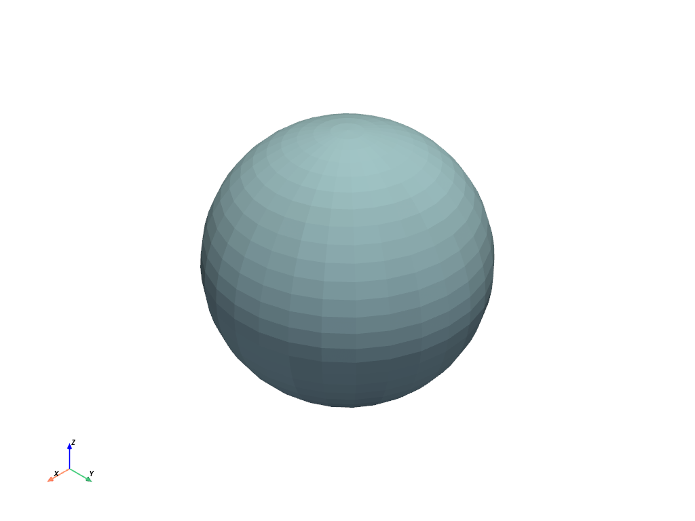
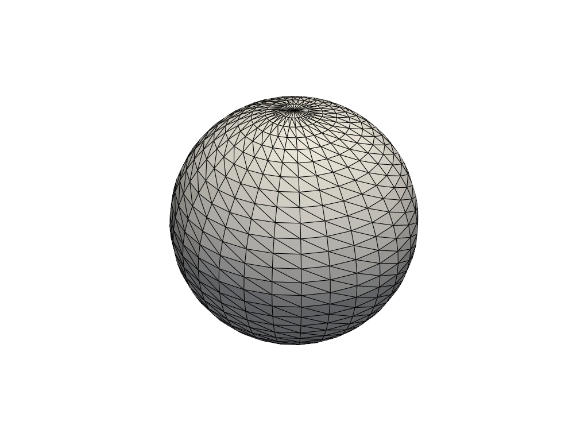
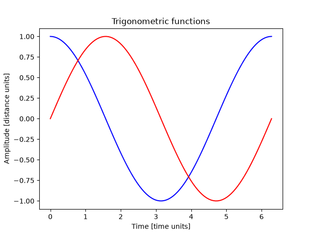

Note
Go to the end to download the full example code.
Sphinx-Gallery#
This example shows how to add a new example when using Sphinx-Gallery.
To use Sphinx-Gallery, first install the package with this command:
pip install sphinx-gallery
Then, add the package to the extensions variable in your Sphinx conf.py file:
extensions = [
"sphinx_gallery.gen_gallery",
]
Plot a simple sphere using PyVista#
This code plots a simple sphere using PyVista.
import pyvista as pv
pv.set_jupyter_backend("html")
sphere = pv.Sphere()
sphere.plot()

Plot a simple sphere using PyVista with a plotter
plotter = pv.Plotter(notebook=True)
plotter.add_mesh(sphere, color="white", show_edges=True)
plotter.title = "3D Sphere Visualization"
plotter.show()

<trame_pyvista.jupyter.EmbeddableWidget object at 0x7f455d102a50>
Figures with Matplotlib#
This example shows how to render a figure using Matplotlib.
import matplotlib.pyplot as plt
import numpy as np
time = np.linspace(0, 2 * np.pi, 100)
fig, ax = plt.subplots()
ax.plot(time, np.cos(time), color="blue", label=r"$\cos{(t)}$")
ax.plot(time, np.sin(time), color="red", label=r"$\sin{(t)}$")
ax.set_xlabel("Time [time units]")
ax.set_ylabel("Amplitude [distance units]")
ax.set_title("Trigonometric functions")
plt.show()

Figures with Plotly#
This example shows how to render a figure using Plotly.
import plotly.graph_objs as go
# More info: https://plotly.com/python/renderers/
time = np.linspace(0, 2 * np.pi, 100)
cos_trace = go.Scatter(x=time, y=np.cos(time), mode="lines", name="cos(t)")
sin_trace = go.Scatter(x=time, y=np.sin(time), mode="lines", name="sin(t)")
fig = go.Figure(data=[cos_trace, sin_trace])
fig
import numpy as np
import plotly.express as px
df = px.data.tips()
fig = px.bar(
df,
x="sex",
y="total_bill",
facet_col="day",
color="smoker",
barmode="group",
template="presentation+plotly",
)
fig.update_layout(height=400)
fig
Render equations using IPython math#
This example shows how to render equations using the IPython math module.
<IPython.core.display.Math object>
from IPython.display import Latex
Latex(r"This is a \LaTeX{} equation: $a^2 + b^2 = c^2$")
<IPython.core.display.Latex object>
Render a table#
This is an example to render a table with Sphinx-Gallery.
A |
B |
A and B |
|---|---|---|
False |
False |
False |
True |
False |
False |
False |
True |
False |
True |
True |
True |
Render a table using pandas
sphinx_gallery_tags = [“sphinx-gallery-rendered”]
Total running time of the script: (0 minutes 8.781 seconds)